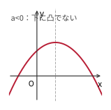
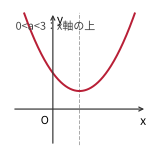
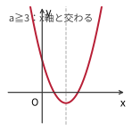

ホーム ＞ 数学I ＞ 2次不等式
すべての実数 \(x\) について \(ax^2-2ax+3>0\) が成り立つような定数 \(a\) の値の範囲を求めよ。
\(x^2\) の係数 \(a\) が文字のときは、まず \(a=0\)（2次式でなくなる場合）を別に調べる。\(a\neq0\) のときは「\(a>0\)（下に凸）かつ \(D<0\)」で考える。
不等式は \(3>0\)。これは常に成り立つ。よって \(a=0\) は適する。
常に \(ax^2-2ax+3>0\) となるには、グラフが下に凸（\(a>0\)）で、\(x\) 軸と共有点をもたない（\(D<0\)）。



\(a>0\) と合わせて \(0<a<3\)。これに \(a=0\) を加える。
\(a=3\)：\(3x^2-6x+3=3(x-1)^2\) は \(x=1\) で0。不適。
【答案（テストに書く形）】
答